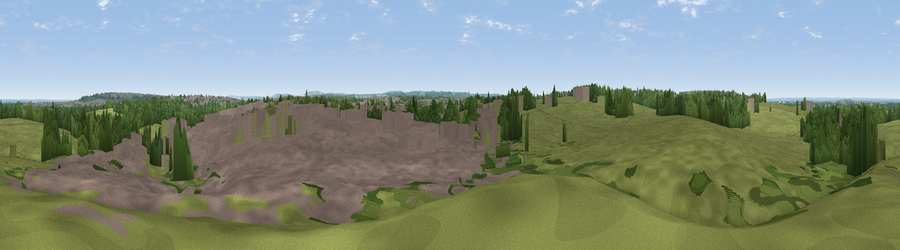

Viewpoint near Lydiard Millicent
#41743 in England · top 80% of its area beats it · near Lydiard MillicentWhere it is
The exact computed spot (SU 11060 87042). Click the marker for map links.
The view, rendered

A 360° render of this exact spot computed from the terrain model, tree cover and land cover — summer colours, afternoon light, calibrated against photographs of famous viewpoints. Real trees, hedges and buildings will differ in detail.
The panorama
Grey silhouette: terrain skyline in each direction (720 bearings, Earth curvature and refraction included). Dashed green: skyline with trees (+15 m) and buildings (+8 m) as obstacles. Blue strip: how far the ground is visible on each bearing.
Where the view opens
Wedge length = distance to the farthest visible ground on that bearing (vegetation-aware). Rings at 10, 25 and 50 km.
What fills the view
51% grassland · 28% built-up · 20% woodland · 2% cropland
Angular shares of the visible panorama (visual magnitude), not map area. Landscape diversity 0.48 (0–1 Shannon).
Key numbers
More beautiful places nearby
The staircase of upgrades: each row has a higher view potential than everything closer. Driving times are estimates from straight-line distance, calibrated against real road routing — check an actual route before setting out.
| Place | Direction | Drive | Score |
|---|---|---|---|
| Viewpoint near Purton | WNW · 3 km | ~8 min | 51.6 |
| Hook Hill | WSW · 4 km | ~9 min | 51.9 |
| Viewpoint near Broad Blunsdon | NE · 6 km | ~13 min | 53.6 |
| Viewpoint near Broad Town | S · 8 km | ~16 min | 65.8 |
| Viewpoint near Broad Town | S · 9 km | ~17 min | 66.9 |
| Viewpoint near Liddington | SE · 12 km | ~23 min | 73.4 |
| Viewpoint near Liddington | SE · 12 km | ~23 min | 74.4 |
| Viewpoint near Woolstone | E · 19 km | ~32 min | 76.7 |
51.58213, -1.84177 · source: osm viewpoint · position refined by local search. Computed location — check access rights before visiting.